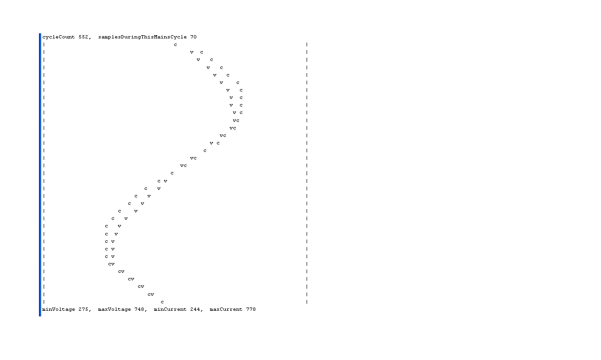

I would be grateful for advice concerning article 'Measuring AC Voltage with an AC to AC power adapter' found on this site.
In a nutshell, the formula:
peak-voltage-output = R1 / (R1 +R2) x peak-voltage-input = 10k / (10k +100k) x 12.7V = 1.15V
views the divider from the 'return' AC view point - by virtue of R1 being mentioned twice in the formula giving a voltage between R1 and R2 of 0.927V approx. (using 12.7 - 2.5V bias = 10.2V).
Viewed from the other side surely the resulting voltage is: 100k / (10k + 100k) * (12.7 + 2.5) = 13.81V.
Given that this is an AC - AC adapter, I don't understand this arithematic...
If anyone can explain, please do. Thanks a lot.
Re: I don't understand: Measuring AC Voltage with an AC to AC power adapter
I don't understand the question. What do you mean by "the 'return' AC view point" and "Viewed from the other side" ?
The R1/(R1+R2) is just a simple resistive divider circuit.
I think I'm missing something obvious in your question.
P.
Re: I don't understand: Measuring AC Voltage with an AC to AC power adapter
P, not knowing the lingo is a problem in itself. I simply referred to the opposite side the transformer as opposed to the side closest the 'top' of the drawing.
Thanks P
Re: I don't understand: Measuring AC Voltage with an AC to AC power adapter
Does this help you?
http://en.wikipedia.org/wiki/Voltage_divider#Resistive_divider
Or this:
http://www.youtube.com/watch?feature=player_embedded&v=XxLKfAZrhbM
P.
Re: I don't understand: Measuring AC Voltage with an AC to AC power adapter
Well it is difficult to say without considerable delay but this Wiki image is different on the face of it in that it puts the 'other' resistor on both sides of the division and is how I have come to 'know' the formula i.e. R1 is referenced once not twice:
Hope this helps and thanks...
Re: I don't understand: Measuring AC Voltage with an AC to AC power adapter
Whether it's R2/R1+R2 or R1/R1+R2 simply depends on how you've labeled the resistors!
But I still don't understand your point about being referenced twice.
Did you watch the video?
P.
Re: I don't understand: Measuring AC Voltage with an AC to AC power adapter
I appreciate that it depends upon how the resistors are labeled but the resistor used twice in the formula on this site is in line with the positive terminal being at the bottom of the drawing - because the resistor that appears twice should be the resistor that is furthest from the positive. This leads me back to my confusion when it comes to non 1:1 ratio resistors being used on AC. I appreciate that I still need to understand the capacitors role in this circuit properly, but non 1:1 ratio resistors will have a different effect depending on the direction of flow and this is the crux of my confusion. Given that this is an AC - AC transformer, not a DC power supply, I don't understand the arithmetic. Perhaps the answer is in that capacitor.
N.B. I watched the video as opposed to listening and didn't see anything about AC unfortunately.
Thanks P
Re: I don't understand: Measuring AC Voltage with an AC to AC power adapter
I'm obviously not explaining this well enough.
AC or DC doesn't make any difference - we're looking for peaks. Although with the usual configurations from this site there's also an offset applied, so the measured voltage stays positive (but sinusoidal), rather than alternating.
Did you read this page? http://openenergymonitor.org/emon/buildingblocks/measuring-voltage-with-an-acac-power-adapter
If you still don't get it then maybe someone else can try to explain it, as I'm not doing very well (because, to be honest, I'm still not 100% sure what you are asking)
P.
Re: I don't understand: Measuring AC Voltage with an AC to AC power adapter
Can I jump in here?
2Tricky I think you are applying a formula without understanding how the circuit actually works. Let's start from the beginning.
Imagine a 9 V battery. If you connect two resistors R1 and R2 in series from the positive terminal to the negative, you will have a current flow. The total resistance is R1 + R2 and Ohm's Law says that the current will be V/(R1 + R2). Reversing Ohm's Law, it also says that the current - let's call it I - generates a voltage when it flows through a resistor, and that voltage is proportional to the current. V = I.R.
From this it follows that the total voltage (9 V) = V1 + V2 = I.R1 + I.R2 = I ( R1 + R2)
and if we rearrange that we get back to I = V/(R1 + R2)
Going back to the voltage across one resistor V = I.R, we can plug that our expression for current into that and we get
V1 = V/(R1 + R2) * R1
and V2 = V/(R1 + R2) * R2 (where V is our 9 V voltage)
and if you re-arrange both of these you get
V1 = V. R1/(R1 + R2)
and V2 = V. R2/(R1 + R2)
I think those are the formulae you are quoting.
Now, If you were to reverse the battery, everything would still be the same, except all the directions of voltages and currents would be reversed. If you were to reverse the battery 50 times a second, it would still be the same. It doesn't matter whether it is a.c or d.c., those relationships still hold true.
If you're OK to here, then exactly the argument and the same formulae apply to the 2.5 V bias. V is 5 V, the supply to the Arduino, the resistors are equal so the centre point is .... ? Because this part of the circuit is d.c. the capacitor does nothing!
... until, that is, you connect the pair of resistors that are dividing down the 9V from the adapter (it's actually about 11 V, but we'll call it 9 V). Because we want to 'anchor' the 2.5 V midpoint firmly, and don't want it waggling about, we need to connect a component that doesn't affect the d.c. conditions, but has a very low resistance to a.c. Enter the capacitor. In this position, it works in exactly the same way as when you're smoothing a d.c. power supply, it evens out any tendency for the 2.5 V midpoint to waggle about.
Re: I don't understand: Measuring AC Voltage with an AC to AC power adapter
Sorry P, I took it as read that my reference was clear because I titled this thread verbatum that article.
I don't want to leave you feeling anything except ok and so I will now try to present the two aspects that are the route of my confusion which please feel free to comment on if you have the time. First when the flow is from the bottom of the transformer (ignoring the capacitor for now):
You can see that my answer is different from the sites - my answer is 1.15V and 11.54V when the direction is reversed - by virtue of the direction of flow.
Thanks again P
Re: I don't understand: Measuring AC Voltage with an AC to AC power adapter
Ignoring the bias for a moment (pure AC), your peaks are going to be positive and negative of the same (absolute) value.
P.
Re: I don't understand: Measuring AC Voltage with an AC to AC power adapter
Surely P, this relies on 1:1 resistor values.
Re: I don't understand: Measuring AC Voltage with an AC to AC power adapter
Robert I'd be grateful if you could see yourself putting some figures in for R1 and R2 with the transformer output at 0 degrees and also at 180 degrees and the output voltages.
Thanks.
Re: I don't understand: Measuring AC Voltage with an AC to AC power adapter
I think a diagram with waveforms and voltages is called for. That will take a little while to draw. Watch this space (but don't hold your breath, it could be a day or two!).
Re: I don't understand: Measuring AC Voltage with an AC to AC power adapter
2Tricky, you seem to be thinking of AC as DC but with +ve and GND swapping ends. It's not like that. AC goes positive and negative. A divider (ignore the resistor values) will give x volts on the positive part of the cycle, and minus x volts on the negative part. Nothing swaps ends, really.
P.
Re: I don't understand: Measuring AC Voltage with an AC to AC power adapter
Paul, that is beggining to ring true. In UK speak, I think (thought) of AC as being positive on the 'Live' terminal for half the time and negative on that same terminal for the other half of the time but equally that the 'Neutral' terminal adopts the opposite polarity to the 'Live' terminal - whatever that might be at that time and to the same amplitude (I guess).
I am pretty new to electronics and have already realised that I don't know what -5V (for instance) means on a pcb schematic and that seems to have carried over to AC. I realise that the key is potential difference between two points but that opens more question for me than it answers.
Thanks Paul
Re: I don't understand: Measuring AC Voltage with an AC to AC power adapter
There is indeed no absolute voltage. All voltages are the difference between two points. For everyone's convenience, most of the time we use the general body of the earth as our reference.
But it is often necessary to use a different reference. if you have your Arduino on the table running off two 1.5 V cells, it's convenient (no, the only way is) to regard pin 8, labelled "Gnd" as the reference, even though it's not connected to the true earth. Then you measure Vcc (pin 7) as + 3 V.
So on your circuit diagram, "-5 V" just means 5 V more negative than the reference voltage. So if you put your black meter probe on Gnd, 0v, common or whatever name has been given to the reference, then when you put the red probe on the point labelled "- 5 V" you will read -5 in the display on your meter.
I don't know where you are in the world, in the UK our mains system always has the neutral earthed at the distribution transformer, so the neutral voltage is always zero with respect to earth (or within a volt or two). The Line voltage actually swings from zero up to +340 V, then back down through zero to -340 V, then back up again. (340 V is the peak value, the rms value, which is the equivalent d.c. voltage that would give the same heating effect, is 240 V).
Re: I don't understand: Measuring AC Voltage with an AC to AC power adapter
Robert I'm in the UK too. Just to focus on something you said for a moment:
and Paul said:
I think my fog comes from not having the right grasp of how to think of negative voltage other than it being an 'open door' for positive voltage in conventional flow theory and I am all too aware that I have no suitable metaphor to describe how to think of it as the source in non-conventional flow theory (I do like my metaphors).
Thanks alot Robert and Paul
Re: I don't understand: Measuring AC Voltage with an AC to AC power adapter
Here is a display of voltage and current samples taken by my Arduino

To make sense of this diagram, you need to imagine a vertical line running down the centre of the graph. Positive (voltage and current) is to the right, and negative (voltage and current) to the left. Time advances from top to bottom, the diagram covers one mains cycle, i.e 20mS.
As explained earlier in this thread, the voltage swings positive and negative with respect to the Neutral line which always stays close to Earth. Because my kettle is a resistive load, the current that it draws changes direction 100 times a second. When V & I are both positive, their product (i.e. power) is positive too. But when V & I are both negative, the result is still positive (-3 * -2 = +6). All these positive contributions are added together within the sketch to determine how much energy has been consumed during the period in question.
A 3kW kettle consumes 3000J per second, which is 60J per mains cycle, or 30J per half cycle.
Re: I don't understand: Measuring AC Voltage with an AC to AC power adapter
calypso_rae I was intrigued by both Roberts reference and yours that Neutral is always close to Earth and that it is the live that is animated and although I haven't worked on understanding the implications yet, I feel it should bring the end of the tunnel closer. That said, my understanding now (referring the article that started my confusion) is that if there is a peak voltage of 12.7V at 90 degrees, then there is a peak anti-voltage of -12.7V at 270 degrees and that I expect this to be fed from somewhere. May I take it that it is fed from the Neutral which by comparison now has 12.7V more potential?
I'll stop there because I can feel recursion coming on!
Re: I don't understand: Measuring AC Voltage with an AC to AC power adapter
if there is a peak voltage of 12.7V at 90 degrees, then there is a peak anti-voltage of -12.7V at 270 degrees and that I expect this to be fed from somewhere. May I take it that it is fed from the Neutral which by comparison now has 12.7V more potential?
Sort of. But it's better to think of the Neutral remaining at 0V, so the load is fed by the Live which is at some negative voltage. Resistive loads take just the same current when the Live is at +X volts as when it is at -X volts. OK?
Re: I don't understand: Measuring AC Voltage with an AC to AC power adapter
My first response is very much no. I am happy to think of Neutral as 0V but I am struggling with the idea that -12.7V is still providing the same influence as +12.7V and that the influence is in the same direction as before. The problem could stem from the fact that I write programs for my own use or the companies internal use quite a bit and that is a sequential discipline. When I think of electricity I still end up progressing through a circuit as though it first drops the voltage through this resistor, then when it goes through that one it drops it further etc etc. I tell myself that it's happening so fast that I should try to think of things happening in parallel but it's a close call at times.
Thanks for trying, I'm missing something but it'll come.
Re: I don't understand: Measuring AC Voltage with an AC to AC power adapter
I am struggling with the idea that -12.7V is still providing the same influence as +12.7V and that the influence is in the same direction as before.
What do you mean by "influence"? If you mean heating a kettle or lighting a lamp, then yes, the "influence" (power) is the same no matter which way the current flows. Take an ordinary torch bulb (not a LED!) and a battery: the bulb lights to the same brightness no matter which way round it is connected.
I think of a negative quantity as being just the opposite of a positive quantity. If you have (say)
do you see
as giving exactly the same result? As far as I'm concerned, -2 is the opposite of +2. If I add -2 to something, I see it as being exactly equivalent to taking +2 away.
So here is my diagram of the Arduino voltage input.
The dark blue wave is the Adapter output. The light blue is the input to the Arduino after it has been attenuated (divided) by the two resistors R1 & R2. Both waves are 'lifted' up (positive voltage) by 2.5 V because one end of the transformer winding is connected to the 2.5 V midpoint. Relative to the midpoint the voltage at the other end of the transformer swings from +15.6 V to -15.6 V, but relative to the Arduino Gnd it swings from +18.1 V to -13.1 V. Likewise, the Arduino input swings from +2.38 V to -2.38 V relative to the midpoint, but from +4.88 V to +0.12 V relative to the Arduino Gnd.
[Note the voltages aren't quite to scale].
Re: I don't understand: Measuring AC Voltage with an AC to AC power adapter
I am struggling with the idea that -12.7V is still providing the same influence as +12.7V and that the influence is in the same direction as before.
In these two situations, although the size (magnitude) of the current is exactly the same, they are in opposite directions. The energy that is consumed by the load is only depends on the magnitude of the current, not its direction, so the heating effect (influence) is always the same.
Electricity always 'falls' downwards. If it helps, you can think of electricity 'coming out' of the Neutral line and 'going into' the Live line during negative halves of the cycle. The currents in the Neutral and Live wires are always equal in size and opposite in direction. That's why the Current Transformer (CT) can be clipped around either cable yet give exactly the same results.
The flow of electricity is actually in the opposite direction to the movement of electrons, so the wording can sometimes sound a bit strange. Just remember that the electrical flow (current) changes direction every half cycle of the mains, and that the flow (current) is zero at the changeover points.
Lovely diagram Robert. Maybe that should go on the Building Blocks page?
Re: I don't understand: Measuring AC Voltage with an AC to AC power adapter
you can think of electricity 'coming out' of the Neutral line and 'going into' the Live line during negative halves of the cycle.
Can you? I reckon this is where 2Tricky is getting confused. The neutral wire of your house mains is (pretty much) at earth potential. In most houses it's safe to touch it (although I wouldn't recommend this!)
So I don't think it helps to think of electricity 'coming out of' the Neutral line. It kind of implies there's a natural potential there.
Or maybe I'm just complicating things!
P.
Re: I don't understand: Measuring AC Voltage with an AC to AC power adapter
Thanks for the effort that went into the drawing Robert and I'm happy to say it (the drawing) makes sense and I'm on board with the added/negated voltage concept in principle but...
My issue is with the transformers divider not being symmetrical. The bias makes sense when it creates a new voltage centre point...
As I write this, I suddenly remember that for DC, the supply voltage just stays put regardless of the dividers' output and so I am happy to say that the positive peak will stay put...
I had written more but it's just fallen apart in my mind again.
Re: I don't understand: Measuring AC Voltage with an AC to AC power adapter
Paul, complicating things is fine, it's much simpler than what is going on in my head!
Re: I don't understand: Measuring AC Voltage with an AC to AC power adapter
So I don't think it helps to think of electricity 'coming out of' the Neutral line. It kind of implies there's a natural potential there.
During the positive half of each cycle, it's easy to think of electricity 'coming out of' the Live wire and 'falling down' into the Neutral wire. This explains why the flow in the Live and Neutral wires is always the same.
That's fine for the 50% of the time when the voltage on the Live is greater than zero. For the other 50% of the time, we have to think a bit more carefully about the terminology.
Given that electricity only flows 'downwards', the logical inference is that it 'comes out' of the Neutral and 'falls down' into the Live wire which is at a potential somewhat less than zero.
If you think about electrons, they get repeatedly pushed to and fro as the Potential Difference between Live and Neutral changes direction. When you switch on an electric fire, the same electrons are forced through the element first this way and then that. It matters not which direction they are going. The energy consumed by the load is just the same during every half-cycle.
DC power is like a bandsaw where the teeth always go in the same direction. AC power is like a handsaw which has a reciprocating action.
Well, that's the way I see it!
Re: I don't understand: Measuring AC Voltage with an AC to AC power adapter
As I write this, I suddenly remember that for DC, the supply voltage just stays put regardless of the dividers' output and so I am happy to say that the positive peak will stay put...
Yes, that's right. Think of a pair of elastic bands that are knotted together and then the two ends are held apart. This is analagous to your resistive divider in the DC setting. If the bands are similar, the 'mid-point' knot will lie in the middle. But if one band is much tougher that the other, the knot will always be closer to that end.
Now tie the free end of your 'tough' band to a fixed point, and then tug the free end of the 'weak' band up and down. The mid-point knot will now move up and down by just a small amount relative to your fixed point. That's what's happening in the AC case.
As described above, the 'mid-point' knot will always be close to your fixed point. That suggests that the small reciprocating voltage will be symmetrical about zero. That would indeed be the case if there were only two resistors between Live and Neutral. The situation is actually a bit more subtle than that.
The AC measurement circuit has several parts which really need to be thought about separately;
1. The mains voltage is transformed down to a smaller sized signal. When 240V AC is applied to the primary coil, a similar waveform will be appear at the secondary. While the secondary coil is not connected to anything, its potential is floating. Putting a pair of resistors (as a load) across the secondary coil does not alter the fact that it is floating. (Think of a boat that's not tied to the quayside. With just a breath of wind it can drift away ... )
2. The resistive divider between +5V and 0V provides a 2.5V DC reference level at its midpoint.
OK so far? Now for the tricky bit.
3. One end of the transformer's secondary coil is now tied to the 2.5V reference. The secondary circuit is therefore no longer floating because one of its ends has now been fixed.
The Arduino needs its analogue input to lie between 0 and 5V. By keeping the value of the resistor at the fixed end small (tough), the voltage excursions either side of the 2.5V fixed point can be kept small. The diagram that I posted yesterday, of the raw samples taken by the Arduino, shows exactly this effect.
Hope this helps.
Re: I don't understand: Measuring AC Voltage with an AC to AC power adapter
I like the elastic band analogy! I'd been trying to think of one, but I only got as far as sucking and squirting your glass of coke through a straw!
P.
Re: I don't understand: Measuring AC Voltage with an AC to AC power adapter
Can we all stop for a moment, take stock and ask 2Tricky where he now thinks the problem is?
Are you happy with the basic units that we use to measure the properties and flow of electricity and electrical energy - principally voltage, current and power? What f I throw in maybe charge and energy?
Are you still having problems with the concept of positive and negative voltage and current?
Are you still having problems with a divider that has unequal resistors?
Re: I don't understand: Measuring AC Voltage with an AC to AC power adapter
Robert, I'm pretty happy with the water tower and tap metaphor that's popular for voltage and current but charge and energy have not really been thought about. Provided I am allowed to make a cross at non-conventional flow, I would say that I am happy about negative voltage provided I think of it in the same way as a vacuum i.e. although a plastic bottle with a top can be made to stay crushed, it is the pressure outside that is doing the work. Yes the divider still taunts me.
Honestly, I rather like Pauls coke example but I would like to suggest some Jack Daniels, Old Grandad or Jim Beam too.
calypso_rae had me thinking about the following though:
but without a eureka moment. I'll take a step back I think and revisit the elastic band idea afresh after a breather - in the mean time, thanks very much to all.
Re: I don't understand: Measuring AC Voltage with an AC to AC power adapter
calypso_rae had me thinking about the following though:
For me, this is the trickiest part of the voltage sensor's design. Although the output of the transformer is intrinsically floating, it can be referenced to 2.5V by just connecting one of its ends to the mid-point of a weedy little resistive divider chain. How can this be? The point is that it only takes a miniscule amount of energy to shift the potential of a length of thin copper wire between one voltage and another.
While the transformer's secondary coil is not connected to anything else, its potential can drift all over the place - just like my ship which can blow away in the breeze. But once anchored to the reference circuit, the potential of the secondary becomes fixed and predictable, which is exactly what we need. The fixed end will always be at 2.5V, and the other end will bounce up and down symmetrically around this point. If there's a resistive divider between these two points, with two different valued resistors, then their mid-point will always be at a known potential, but not exactly half way between the two ends.
Cast a boat adrift in an estuary, and you've no idea where it will end up. But if you tie it to a mooring, you then know that it will always be close to that fixed point. Every few hours it will drift upsteam or downstream by a few feet as the tide changes. If you were to plot the location of that boat over several cycles of the tide, that's pretty much what the Arduino is doing when it samples the voltage waveform.
Now, about that Jack Daniels ...
Re: I don't understand: Measuring AC Voltage with an AC to AC power adapter
When the effect of the Jack Daniels has worn off...
Try thinking of the potential divider as a lever. It pivots on a fulcrum at one end, and the end of the lever is the voltage you're dividing. If it's d.c, you hold that end steady. If it's a.c., you waggle it up and down. Let's define zero as being when the lever is horizontal.
Now apply a positive d.c. voltage - lift the end of the lever. Let's say 1 cm = 1 V. and the lever is 1 m long. If you take the middle of the lever, it is has moved half the distance. A point a quarter of the way along moves a quarter of the distance, a point 87.6% of the way along moves 86.7% of the distance.... We can choose a point anywhere along the lever so that it does anything between not moving at all (right at the pivot) and moving the full distance that the end moves (right at the end).
All you need to do now is stretch a length of resistance wire along the lever from one end to the other. You call the length of wire from the pivot to the point we're looking at R1, and the length of wire from the point we're looking at to the end R2. Resistance is of course proportional to length. Now you have a potential divider and by moving the point at which we tap off the voltage, we can choose any proportion we like from zero (right at the pivot, it doesn't move) to the full input voltage (right at the end).
OK, let's do the sums. Suppose our resistance wire is 100 kOhms per metre (and the lever is 1 m long):
The input voltage is 5 V, the middle is 2.5 V. That's R1 = 50 k and R2 = 50 k. V = 5 * 50 k / (50 k + 50 k) = 2.5 V. Correct? I think so.
The input voltage is again 5 V, our point 10% up is now 0.5 V. That's R1 = 10 k and R2 = 90 k. V = 5 * 10 k / (10 k + 90 k). Correct?
If you're OK so far, then if you move the pivot of my lever up by 2.5 cm, you've added 2.5 to all the measurements. If you try waggling the lever up and down, the end you're waggling can go above the pivot (positive relative to the pivot) or below the pivot (negative relative to the pivot) and if you waggle it down far enough, it'll go below our original zero. Let's go down to 13.1 cm below our original reference. When it does that, you can see that part of the lever nearest the free end is below our reference, but the rest nearest the pivot is above the reference (it's always positive). Raise the end of the lever to 18.1 cm above our reference, and all of our lever is above (it's positive). Now if you're careful, you can choose a take-off point that moves between a bit more than zero (just above our reference zero) to a bit less than 5 cm. Now waggle the end of the lever up and down between those two positions.
I guess you've noticed by now that the numbers I've been quoting come from that diagram a few posts back... Any offers for where the take-off point needs to be? Not 18/(100+18) of the way up the lever, by any chance?
Does that metaphor help?
Re: I don't understand: Measuring AC Voltage with an AC to AC power adapter
"P, not knowing the lingo is a problem in itself"
Transformers have (at least) two windings, one on the primary side and one on the secondary side. There are two ends to each winding, which are connected to flying leads, pins or terminals. Sometimes, there is another connection called a tap part way along a winding. The windings are usually made on a bobbin, through which an iron (usually) core passes.
Does that help with the lingo problem?
Re: I don't understand: Measuring AC Voltage with an AC to AC power adapter
Back from my walkabout, I have tried to grasp this again.
calypso_rae, this amazes me:
It reminds me of both the feeling of holding a gyro and the ability to move a very heavy object when friction is removed. I am getting the feeling that electricity is stranger than I could have imagined - I read the word 'quantum' with regards to a diode during my walkabout...
It's probably best that I don't try to properly understand the cause for now and so I'll just try to understand it in a simpler way. I'll try to get to grips with Pauls and Roberts contributions too in due course.
Thanks again - me
Re: I don't understand: Measuring AC Voltage with an AC to AC power adapter
Sorry, computer had a quantum blip, it thought I was here too!
Re: I don't understand: Measuring AC Voltage with an AC to AC power adapter
I am getting the feeling that electricity is stranger than I could have imagined
In that you can't actually see it working, I suppose that electricity is intrinsically "strange", Instead you have to rely on certain principles which allow you to work out what's going on. My set of guiding principles has been considerably extended during the last few months!
It may be best to decide on something that you would like to construct, and then start to build it. The underlying principles will soon become more clear as you experiment with things. Breadboard is great for this. Left undisturbed, a breadboard rig can also work reliably for months on end as my original Mk2 setup continues to do.
Re: I don't understand: Measuring AC Voltage with an AC to AC power adapter
"In that you can't actually see it working," - no, and you can't hear it either, but you can surely feel it! And it's not generally recommended that you do. But you can see, hear and feel the effects, and that is what you have to rely on - aided by instrumentation in all its guises of course.
Re: I don't understand: Measuring AC Voltage with an AC to AC power adapter
Sure, there are indeed occasions when the immediate nature of electricity can be seen, heard and felt. Thankfully, such extreme conditions seldom occur while we're playing around with Arduinos. The only reminder that I've received so far was when I started to dismantle the socket end of an extension cable without first disconnecting the plug end from the mains - ouch!
In the absence of instrumentation, I doubt whether most of us would know whether our circuits were on or off.
Re: I don't understand: Measuring AC Voltage with an AC to AC power adapter
As part of my effort to get to grips with this I came across a little java applet that simulates circuits and surely enough, when this is simulated it comes up with the same figures - though I can't get to grips with the current in the primary winding never changing direction either. If anyone is curious, the applet is here (it will load complete with the specific circuit after a few seconds):
http://www.falstad.com/circuit/#%24+1+5.0E-6+7.619785657297057+61+5.0+50...
I've been looking at other subjects such as converting Eagle files to gcode for a milling machine since floundering on this topic but despite my miasma am determined to see some light other than just accepting it.
For anyone who has looked at the applet, does the primary direction make sense?
Thanks a lot
Re: I don't understand: Measuring AC Voltage with an AC to AC power adapter
Erm, Sorry, 2Tricky, you have picked up a very special case there that is not at all typical. They have shown the transformer with a d.c. component in the primary (the wave is offset above the zero, yes?).
This particular situation often arose with output transformers of valve amplifiers when the primary (actually the high voltage) winding would carry the anode current. But even then although the current was always flowing in one direction, it was changing all the time, and it was the changing flux that generated the output in the secondary winding.
Most transformers do not take kindly to a d.c. component of current anywhere (unless of course it is balanced by an equal and opposite current in another winding), because it shifts the operating point of the flux in the magnetic material.
I use LTSpice (so does Glyn & Trystan) for circuit simulation. It's free from http://www.linear.com/designtools/software/
Re: I don't understand: Measuring AC Voltage with an AC to AC power adapter
Robert apologies for the long absence, I have to admit that your last post left me very beached. May I ask: When you say this is a very special case, and given that it is the scenario that started my itch, how does it differ from the scenarios that you had in mind prior?
Thanks for the Spice suggestion. I'd downloaded a version already but it didn't seem particular intuitive for a noob. That said, a lot more water has flowed under the bridge - though I don' feel much wiser.
Cheers me
Re: I don't understand: Measuring AC Voltage with an AC to AC power adapter
I'm really struggling here. You wrote "I can't get to grips with the current in the primary winding never changing direction either." When I looked at the examples on the site, several were transformers in standard configurations and then the one you had selected. From memory, it showed a d.c. source in the primary circuit.
Now I've followed the link again and the circuit is completely different - it is a (your?) simulation of the voltage input.
If this is indeed the correct thing I'm looking at now, then I can clearly see the primary current changing direction. And the secondary current is too. So if I'm now looking at what you intended me to look at, I don't understand your comment.
In electrical circuit analysis, there's a thing called the superposition theorem. This states that for a linear system (it doesn't work for instance for semiconductor diodes where voltage and current have a logarithmic relationship), you can work out what is happening by taking each voltage source at a time and analysing the circuit, then add the results together. If you do this for the voltage input:
Now you add together these two results and you can see (I hope) that when you work out the numbers (or simulate it) there is a reciprocating current sourced by itself, and a very much smaller direct current sourced by the 5 V supply, flowing in the transformer.
You can do the experiment either with the applet (I assume!) or with PSpice and see the two currents individually, then put both voltage sources in and verify that the combined result is the sum of the two individual currents. And the voltages add up too.
As it is without the ADC input connected, you don't of course get any current flowing in or out of that floating node. But the voltage at where the ADC would connect is still the sum of the individual voltages when you apply the superposition theorem.
Re: I don't understand: Measuring AC Voltage with an AC to AC power adapter
I think the diagram above is great. For me, it includes everything that I need to know.
The green trace is showing a reduced-amplitude version of mains Live which oscillates around 0V (or, to be more correct, mains Neutral). That voltage can be seen at the Live end of the transformer's primary coil. The transformer's output has a similar shape in terms of its AC content, but its DC content is undefined because the secondary coil is floating. That's no good for the Arduino because it needs to see a voltage that sits within the 0V - +5V range of its ADC.
A pair of similarly valued resistors allow the 2.5V mid-point to be established, and one end of the secondary coil is tied to this point. The other end of the secondary coil then oscillates symmetrically around this point. For most mains transformers, the output signal is far too large, so only a small proportion is used. In the diagram shown above, only one eleventh of the output signal is fed to the Arduino. That's the yellow trace on the diagram.
Here are some results using a similar circuit at my house. As you can see, the voltage samples lie nicely within the input range of my Arduino. The left hand edge of the diagram corresponds to 0V at the Arduino which is coded as level 0 by its ADC. The right hand side of the diagram corresponds to 5V at the Arduino which is coded as level 1023 by its ADC.
Current, as measured by the CT, is similarly treated so as to sit nicely within the ADC's input range.
Re: I don't understand: Measuring AC Voltage with an AC to AC power adapter
Firstly apologies again for taking ages to respond.
First things first: Robert the image you posted is indeed my design and which i supposed to represent the exact scenario that was at the centre of my conundrum.
I wonder whether there are any bugs in the simulator because my primary windings' yellow current dots travel only clockwise and believing that current does have a direction in principle, I think this defines its direction in this case. Thanks for the explanation which I'll have to read again once I've got time and also the superposition theorem.
Thanks again.
Re: I don't understand: Measuring AC Voltage with an AC to AC power adapter
calypso_rae I'm entirely onboard with your first paragraph and most of the second but the rest of the second is just something that I am accepting as a rule (and a tourist!).
While I'm at it, I've updated my LTSpice but I see that Robert last mentioned a different Spice (I still need to find a tutorial for LTSpice). Do you know if there is a big distinction in performance/facilities between these or do you particularly like the Java simulator that I've been using or...I should have of course asked Robert at the time about LTSpice versus the other Spice.
Thanks a lot.
Re: I don't understand: Measuring AC Voltage with an AC to AC power adapter
I use LTSpice because it's comprehensive, free and local to my machine. I don't know of a tutorial as such, it's got the help of course which I can appreciate isn't much help if you're an absolute newcomer to it. I don't normally run Java (it's blocked in the browser I normally use) so I can't comment about the accuracy of your simulator. But when I did succeed in getting it to work, it didn't look right until I slowed it down a lot. Maybe that is what is confusing you. Ignore PSpice - that's a typo, it was the old Spice that I used to use. (Spice is the generic program that probably all simulation programs are derived from).
What is it about the Robin's second paragraph that you can't get to grips with?
Re: I don't understand: Measuring AC Voltage with an AC to AC power adapter
calypso_rae I'm entirely onboard with your first paragraph and most of the second but the rest of the second is just something that I am accepting as a rule (and a tourist!).
Hello again. If the part of my explanation that's troubling you is:
then maybe you could think about a standard AA battery that's sitting somewhere all by itself, doing nothing in particular. Although there is undoubtedly a potential of 1.5V between its terminals, any talk of its "DC content" is somewhat meaningless until it becomes connected to something which has a known potential.
That's just how it is with the CT and the Arduino. They need to be connected together my some means, namely the Vref circuit. Then they're both held to the same reference and can no longer drift apart.
If some other part was troubling you, then please let me know and I'll have another think about it ...
Re: I don't understand: Measuring AC Voltage with an AC to AC power adapter
" (I still need to find a tutorial for LTSpice)."
In seconds I found these:
I haven't studied them in any detail so I can't vouch for them.
Re: I don't understand: Measuring AC Voltage with an AC to AC power adapter
I could be getting pedantic because I too am largely floating (couldn't resist) but from what I understood, the 2.5V becomes the pivot point i.e. at one extreme of the range...
I've just realised that even in the original site example this was not so (having revisited the example page which of course has the new wave image).
I'm getting myself internally into deep water with this and so as I also suffer from the belief that creating a negative reference from a 'device' that is connect to 0V upwards (please don't worry about holes in the description) is magic, this is in keeping. Here is a list of my 'known' rules with respect to the example page - please comment:
OK, so what I have now is a Secondary winding 'span' of 25.4V. If I fix the Neutral end to 2.5V, this makes the other end 27.9V. If I put this through the divider I get 2.5364V...I now see I have something wrong because I can't see how to get the centre of the AC swing to be 0V.
Thanks again
Re: I don't understand: Measuring AC Voltage with an AC to AC power adapter
I'm getting myself internally into deep water with this ... - please comment:
I think you're trying to analyse the AC adaptor's operation in too much detail. The primary side is connected directly across the mains Live to Neutral so the voltages there are clear enough. While nothing is connected to the adaptor's output, then its secondary coil will not be at any particular voltage - its potential will float just as does a standard battery while its not connected to anything.
To measure the battery, you need to connect something to either end. An easy way to measure the battery's output potential is to simply connect a DC voltmeter across its terminals. You could get the same kind of reading from the AC/AC adaptor by connecting an AC voltmeter across its secondary coil. In neither case would the measurement be referenced to anything - it would just be the relative value of the voltage (AC or DC) between the two output terminals.
If your measurement system has only one input connection (as does the Arduino), then you need to provide a "return path" for the current that you're measuring. In the case of our AC voltage sensor, we tie one end of the adaptor's secondary coil to our DC reference point, and then take our measurements at the other end. To reduce the signal size, we actually only measure a fraction of the secondary's voltage, but the principle is the same.
This arrangement really does work, as many dozens of constructors have demonstrated.
Re: I don't understand: Measuring AC Voltage with an AC to AC power adapter
What Robin is saying is absolutely correct - there is no such thing as an absolute voltage. For convenience and as an accepted convention, we usually define the voltage of the earth as our reference. But as Robin's example nicely shows, when you have a battery in your hand and measure the voltage, you are using one end of the battery as the reference and measuring the voltage of the other end with respect to it. The earth has nothing to do with it.
Measuring voltage is the same as measuring distance. If I say I'm 5'10",.do I mean 5'10" tall, 5'10" from the window, or what? Experience and convention says I probably mean the first, but there are plenty of other possibilities.
The same goes for voltage. When we say a 1.5 V battery, by convention we mean one that measures 1.5 V between the ends. If we say a 5 V power rail (to our Arduino), by convention we mean one that is 5 V above our common reference voltage, the one we label as 0 V or GND on the diagram.
Re: I don't understand: Measuring AC Voltage with an AC to AC power adapter
OK, so I have put the voltage values (prior to biasing) into a divider and found the two unbiased voltages +1.15V and -1.15V. This is interesting to me because I'm not sure I tried it before. I was so hung up on reversing R1 and R2 - but perhaps that was when I still thought of the two wires (of the Secondary) as being the negation of each other.
I read a article that stated: Series voltages are summed (such as two 1.5V batteries - producing 3V) and equal parallel voltages remain the same but differing parallel voltages can be a can of worms. This looks of course to me like the can of worms scenario in principle but is clearly valid and without ambiguity, presumably because of the floating property.
I now think I can put this to bed or at least give it a cup of Horlicks - but I remain fascinated. This thread will be bookmarked and I'll return to pour over the examples that have been given by everyone kind enough to contribute.
Thanks a lot 2Tricky